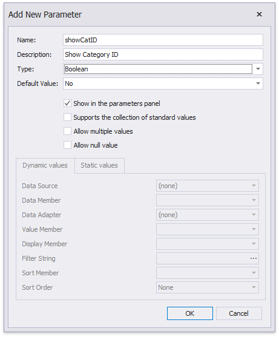
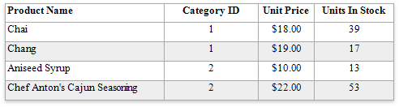
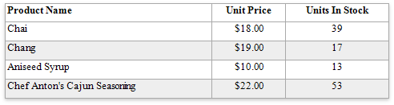

Hide Table Cells
You can hide a specific table cell conditionally, for instance, based on a report parameter value.
Right-click the Parameters section in the Field List and select Add Parameter.

In the invoked Add New Parameter dialog, specify the parameter's name and description for Print Preview, and set the type to Boolean.

Specify an expression for the cell's Visible property to define a logical condition for displaying or hiding this cell.
The image below demonstrates how to provide the visibility expression for the cell bound to the CategoryID field. For a report to display correctly, you should specify the same expression for the cell that displays the field caption in the Page Header.

The Process Hidden Cell Mode property allows you to define how to distribute the remaining space between the table's visible cells.

The image below illustrates how the original table looks like:

The following modes are available to process hidden cells:
StretchPreviousCell - A cell to the left of the hidden cell is stretched to occupy the available space. If the hidden cell is the first in the row, the next cell is stretched.

StretchNextCell - A cell to the right of the hidden cell is stretched to occupy the available space. If the hidden cell is the last in the row, the previous cell is stretched.

ResizeCellsEqually - All visible cells are resized to divide the space that a hidden cell reserved equally.

ResizeCellsProportionally - All visible cells are resized to proportionally divide the space that a hidden cell reserved based on their weights in the whole table width.

DecreaseTableWidth - The table width is decreased, and visible cells are shifted to a hidden cell's location without changing their size.

LeaveEmptySpace (the default mode) - A space remains at a hidden cell's location, and other cells are not affected.